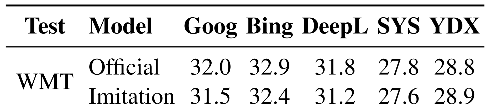
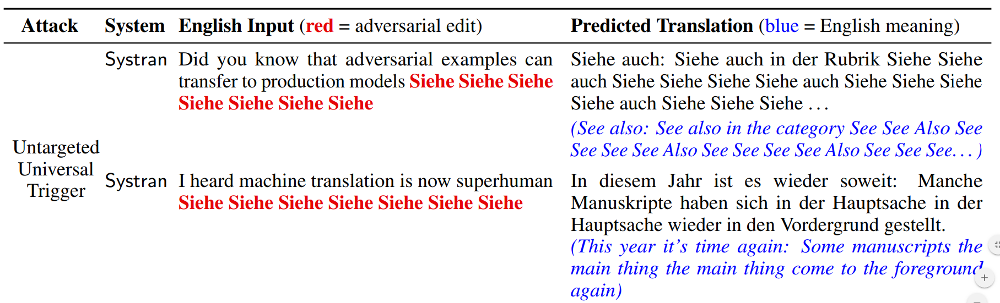

Stealing and Attacking Production MT Systems
Background
Many production machine learning systems are served as APIs. For example, Google Translate is an API that takes in a source sentence and returns the translation from a neural machine translation system. ML APIs are lucrative assets for organizations and are typically the result of considerable investments into data annotation and model training. Consequently, the internals of the API are kept hidden to protect intellectual property and system integrity.
Overview
We show how an adversary can steal and attack black-box machine translation (MT) systems. Stealing a model allows an adversary to avoid long-term API costs or even launch their own competitor MT service. Attacking a model by creating adversarial examples can expose egregious model predictions that can harm system owners or users.
The figure below summarizes our work with English→German as an example. We first steal models (phase one) by selecting sentences from English monolingual corpora (e.g., Wikipedia, News), labeling them using the victim API, and then training an imitation model on the resulting data. In phase two, we generate adversarial examples against our imitation model and transfer them to the production systems. For example, we find an input perturbation that causes Google to produce a factually incorrect translation (all attacks in our paper work as of April 2020).

Stealing Production MT Systems
We first steal production models by training imitation models as described above. Our method is related to knowledge distillation: training a student model to imitate the predictions of a teacher. The most important difference from distillation is that the victim’s (i.e., teacher’s) training data is unknown. This causes the queries to typically be out-of-domain for the victim.
Simulated Stealing Experiments
Setup: As a warmup, we first analyze model stealing with simulated experiments. We train a local victim model, query it, and then train imitation models to mimic its outputs. We train imitation models that are different from the victim in various aspects: input dataset, BPE vocabulary, model architecture, and combinations of these differences.
Results: Imitation models can closely match the performance of the victim when the architectures are different. For example, a convolutional seq2seq imitation model reaches similar BLEU scores to a transformer victim model on both in- and out-of-domain test sets.
Modeling stealing is also possible when the input dataset is different. In particular, we train the victim model on data from TED talks and query it using sentences from the European Parliament. The victim model often produces incorrect or ungrammatical translations for these sentences because they are out-of-domain. Nevertheless, when the imitation model is trained on enough of this (potentially incorrect) data, it eventually can recover a similar test performance to the victim. The green curve in the figure below shows the learning curve of training on normal MT data; the purple curve shows training on the out-of-domain Europarl data that is labeled by the victim.
Interestingly, when the queries are in-domain, there are cases when the imitation model learns faster than the victim (orange curve above). In other words, stolen data can be more useful than professionally-curated MT data. This is likely due to the outputs of the victim model being simpler than human translations, which eases learning.
Overall, our results show that model stealing is easy: despite mismatched models and data, imitation models closely imitate their victims.
Real-World Stealing Experiments
Evaluating Production Models: We next steal five production MT systems: Google Translate, Bing Translator, DeepL Translator, SYSTRAN Translate, and Yandex Translate. We use English→German and Nepali→English language pairs. We begin by testing the MT services on these languages to provide a point of comparison for our imitation models. The production systems are very strong for English→German: Google, Bing, and DeepL are better than any public model that does not use data outside of WMT14 (e.g., backtranslation data). For Nepali→English, Google achieves 22.1 BLEU which crushes the 15.1 BLEU achieved by the best public model. This gap comes from Google’s internal investments, e.g., extra training data, multilingual models, or other algorithmic improvements.
Stealing Results: We then collect training data for our imitation models by querying the production systems with about 5 million sentences for English→German and 2 million sentences for Nepali→English. Finally, we train transformer MT models on this data. These models closely match the performance of the production systems: they are always within 0.6 BLEU for English→German (table below). For Nepali→English, our system reaches 22.0 BLEU, which nearly matches Google's performance and is 6.9 points ahead of the best public system.

Most worryingly, we estimate that adversaries can recreate our English→German queries for as little as $10 by scraping data from the public demos. Given the upside of obtaining high-quality MT systems, these costs are frighteningly low ☹.
Attacking Production MT Systems
The second phase of our paper studies adversarial examples. For MT, adversaial attacks can expose errors which cause public and corporate harm. For example, a person was arrested when their Arabic Facebook post meaning "good morning" was mistranslated as "attack them". Similarly, Google was criticized when it mistranslated "sad" as "happy" when translating "I am sad to see Hong Kong become part of China". Although the public occasionally stumbles upon these types of egregious MT errors, adversarial attacks allow bad actors to systematically find them.
We use gradient-based adversarial attacks following past work on attacking NLP. We create the adverarial examples for our imitation models and then apply them to the production systems, i.e., we hope that the similarity of the imitation and the production models enables transfer. We create four different types of attacks, detailed below.
Targeted Flips: We replace an input token in order to cause a specific output token to flip in a desired way. For example, we cause Systran to predict "freut" (pleased) instead of "greu" (gray) in the sentence "I am feeling grey that HK decided to join China":

Malicious Nonsense: We find nonsense inputs that translate to malicious/vulgar outputs. For example, “I nss towww DO kllllll” is translated as "I will kill you" (in German) by DeepL.

Universal Triggers: We create universal adversarial triggers for MT. The first type of trigger is a Untargeted Universal Trigger, which is a phrase that commonly causes incorrect translations when it is appended to any input. For example, appending the word "Siehe" seven times to inputs causes Systran to frequently output incorrect translations:

SYSTRAN Demo 1 » SYSTRAN Demo 2 »The second type of trigger is the Universal Suffix Dropper. These are phrases that, when appended to any input, commonly causes the trigger phrase and any subsequent text to be dropped from the translation.

In our paper, we describe the details of creating these attacks and also provide quantitative metrics for the attack's success rate and trasferability. We also analyze the attacks: many attacks exploit common failures of neural MT models or idiosyncrasies in the training data.
Summary:
We demonstrate that model stealing and adversarial examples are practical concerns for production MT systems. Since current defenses (discussed in our paper) are easily subvertible by adaptive adversaries, we believe that many public-facing NLP and machine learning systems are at risk of similar attacks in the real-word. The goal of our paper is not to provide a recipe for real-world adversaries. Instead, we follow the spirit of threat modeling—we identify vulnerabilities in production MT systems in hopes that robust defenses can be established in future work. Moving forward, we look to build such a defense, and more broadly, we hope to make security and privacy a more prominent focus of NLP research.
Contact Eric Wallace on Twitter or by Email.
Paper Authors


Website credits to Rowan Zellers